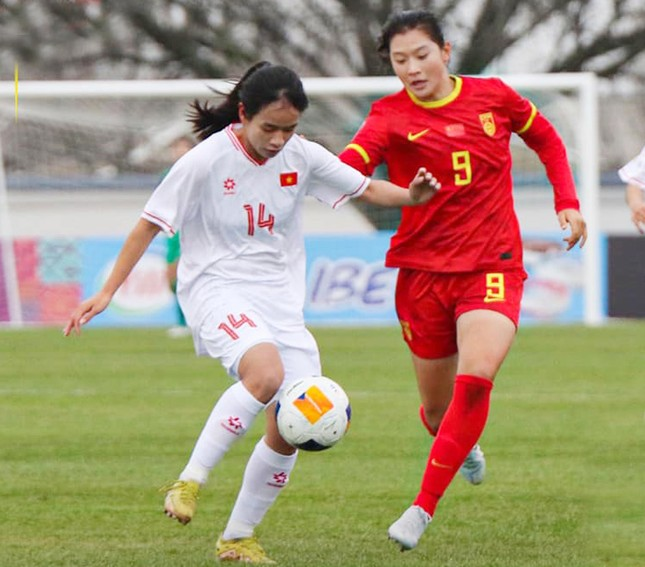

10/03/2024 | 17:34
Người ghi bàn cho U20 nữ Việt Nam là Minh Chuyên, cầu thủ sở hữu những tố chất cơ bản của một tiền đạo là tốc độ, thể lực và kỹ năng dứt điểm. Phút 74, Minh Chuyên tăng tốc vượt qua các hậu vệ U20 nữ Trung Quốc, đón bóng và dứt điểm gọn gàng ghi bàn. Đây là bàn thắng đầu tiên và duy nhất của U20 nữ Việt Nam ở giải đấu năm nay, giải đấu mà U20 nữ Việt Nam đã bị biến thành “bia đỡ đạn” do các đối thủ quá mạnh. U20 nữ Nhật Bản là nhà ĐKVĐ của giải, U20 nữ Triều Tiên từng 2 lần vô địch World Cup trong khi U20 nữ Trung Quốc cũng từng 1 lần vô địch châu Á và 2 lần làm á quân thế giới.
Tương quan chênh lệch khiến U20 nữ Việt Nam thua sớm trước đối thủ. Ngay phút 11, thủ môn Lê Thị Thu đã vào lưới nhặt bóng. Yu Jiaqi là người đánh đầu ghi bàn sau đường chuyền chính xác của đồng đội. 4 phút sau, lợi thế về chiều cao giúp U20 nữ Trung Quốc nhân đôi cách biệt. Từ quả đá phạt, Lu Jiayu đánh đầu ghi bàn và đến phút 17, tỷ số đã là 3-0 cho U20 nữ Trung Quốc. Nhận 3 bàn thua chóng vánh, U20 nữ Việt Nam đã siết lại đội hình và như trận gặp Triều Tiên, các cầu thủ của HLV Ijiri thi đấu rất quyết tâm để bù lấp vào những hạn chế về thể lực, thể hình.
Khả năng theo bóng rát giúp U20 nữ Việt Nam hạn chế tối đa sức mạnh tấn công của đối thủ. Do vậy, từ phút 17 đến khi kết thúc hiệp 1, U20 nữ Việt Nam đã không nhận thêm bàn thua. Thế trận tương tự diễn ra trong nửa đầu hiệp 2. Thậm chí U20 nữ Việt Nam đã tấn công khởi sắc hơn và thành quả là bàn thắng của Minh Chuyên. Tiếc rằng vì thể lực sa sút mà U20 nữ Việt Nam liên tiếp để đối thủ ghi liền 3 bàn trong 15 phút cuối. Kết thúc trận đấu, U20 nữ Việt Nam chấp nhận thua 1-6, rời giải với 0 điểm sau 3 trận thua.